import csv # importa a biblioteca nativa csv
pokemons = [] # cria a lista de pokemons vazia
with open('pokemons.csv', 'r', encoding='utf-8') as arquivo: # abre o arquivo
dados = csv.DictReader(arquivo) # utiliza a biblioteca csv para ler cada linha do arquivo
# e carrega-la em um dicionário de dados
for pokemon in dados: # percorre o arquivo linha a linha
pokemons.append(pokemon) # adiciona cada linha na nova listaOlá Cientista de Dados!
Nesta aula vamos por em prática o que aprendemos até aqui:
- Criar um notebook no Google Colab
- Salvar no Google Drive
- Fazer upload de arquivos de dados no sistema de arquivos local do notebook
- Fazer upload de arquivos de dados no Google Drive e montar seu Google Drive no notebook
- Criar script para carregar dados
- Transformar os dados carregados do formato largo para o formato longo.
Criando um notebook no Google Colab
Siga o passo a passo para criar um novo notebook no Google Colab.
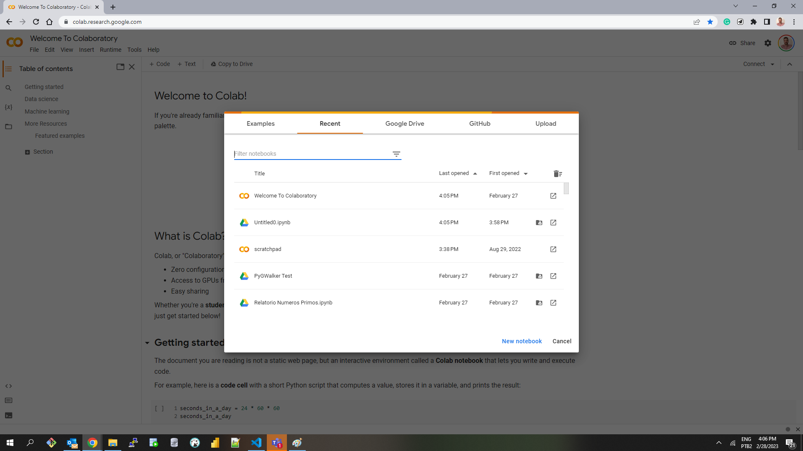
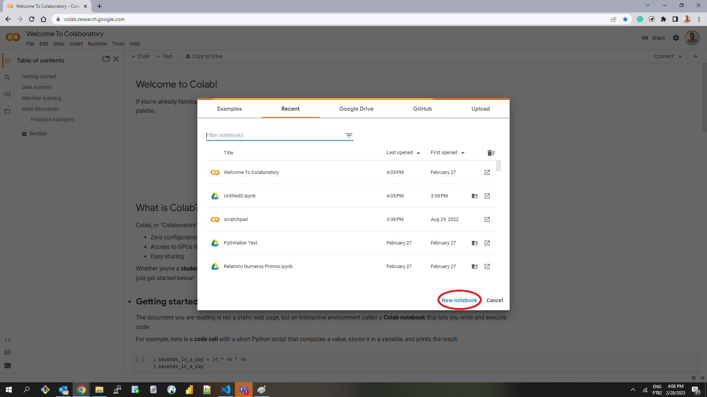
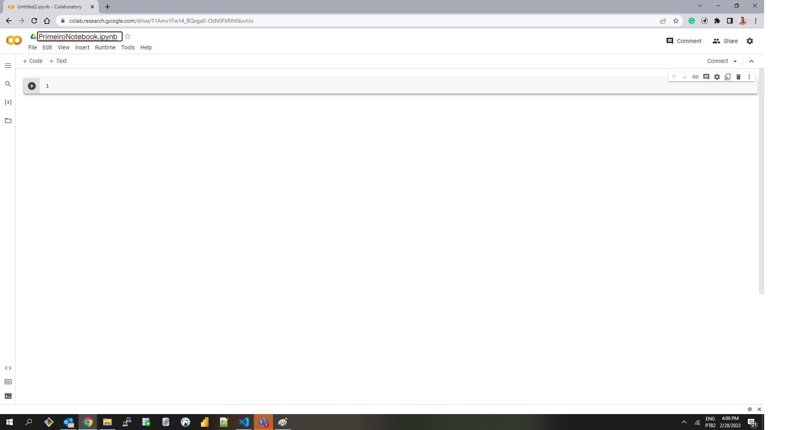
Agora, vamos aprender como escrever um código em Python e executa-lo no notebook.
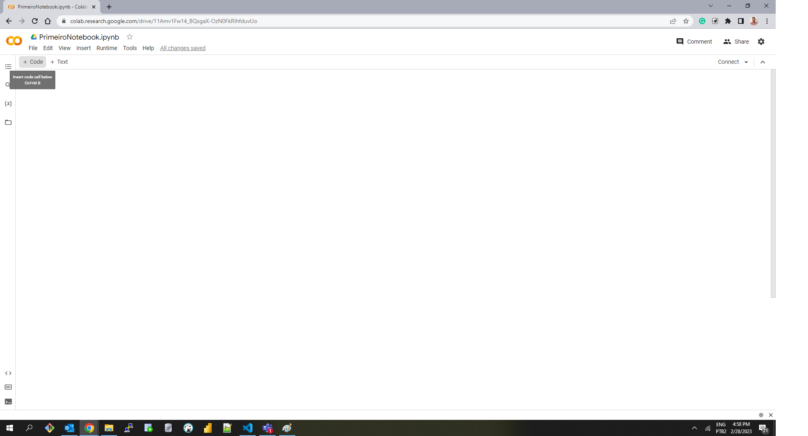
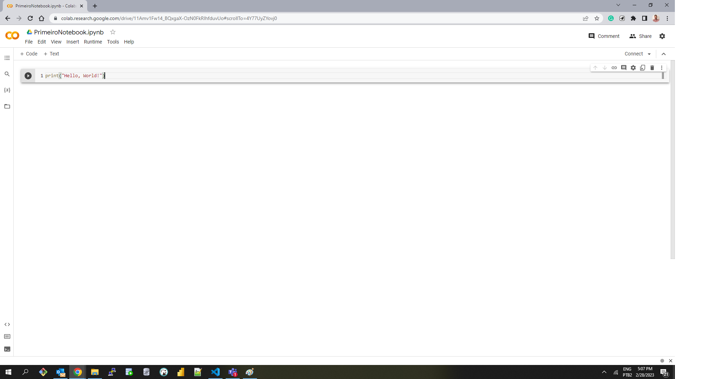
print('Hello World')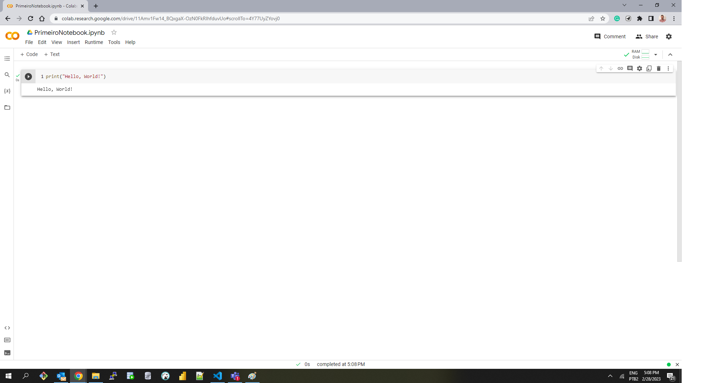
Dessa forma, o notebook “PrimeiroNotebook” estará pronto para ser utilizado. Lembrando que o Google Colab é uma ferramenta gratuita e muito útil para desenvolvimento de projetos de análise de dados, aprendizado de máquina e outros projetos de programação em Python.
Carregando dados em um notebook
Agora que temos nosso notebook inicial, vamos exercitar o princípio mais básico de toda a visualização de dados: a carga dos dados que serão visualizados.
Para fazer isso, precisamos primeiro de uma fonte de dados. Uma fonte de dados pode ter formatos bem comuns e conhecidos como CSV, Excel e JSON, até outros formatos especializados como Feather, Arrow, Parquet,…Quanto à origem da fonte de dados, elas podem ser um arquivo local no seu computador ou no servidor onde a rotina executará ou até mesmo uma URL. Por questões de performance, o arquivo local tem uma certa preferência.
Quando utilizamos o Google Colab, o nosso notebook tem duas possibilidades para poder ler arquivos de forma local: - os arquivos podem ser armazenados no sistema de arquivos local do notebook, que é temporário, ou - podemos deixar nossos arquivos no Google Drive e conectamos o Google Drive ao nosso notebook
Vamos ver esses dois cenários em detalhe nas próximas seções.
Disponibilizando arquivos a partir do sistema local do notebook
O sistema de arquivos local do notebook (session storage) é uma maneira muito conveniente de manter de forma local alguns arquivos de dados que precisamos trabalhar. Em termos de performance, seria a mesma coisa que executar tudo no seu próprio computador. O incoveninente desse método é que o session storage é destruído quando fechamos o notebook ou ele fica inativo por muito tempo. Ele é recriado quando reabrimos o notebook, mas vem vazio.
Tip
Para o restante das aulas, todos os arquivos de dados que iremos utilizar podem ser encontrados em: LabEduc datasets
Você pode fazer o download ou tentar carregar direto da URL (veremos como fazer isso mais adiante).
Para utilizar o session storage, siga os passos abaixo:
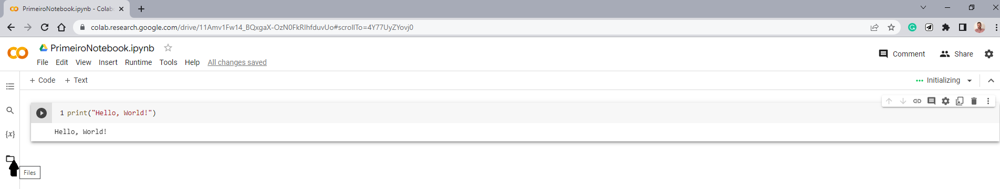
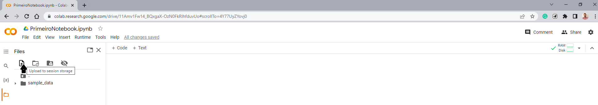
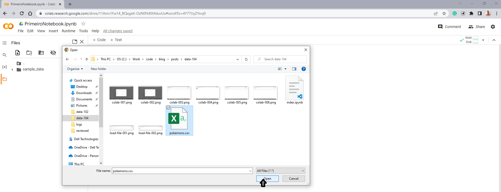
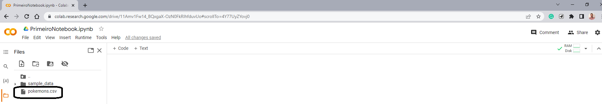
E pronto, temos um arquivo pronto para ser utilizado!
Disponibilizando arquivos a partir do Google Drive
Outra maneira maneira mais permanente utilizar o session storage é montar nosso Google Drive como uma pasta da session storage.
Para fazer isso, vamos colocar no inicio do nosso notebook uma célula com o código abaixo:
from google.colab import drive
drive.mount('/content/drive')Vamos executar a célula e o Google Colab deve pedir permissão para se conectar ao Drive e no final emitir a mensagem abaixo. Além disso, na lista de pastas, à esquerda, devemos ver a pasta que indicamos que receberia o mount do Google Drive.
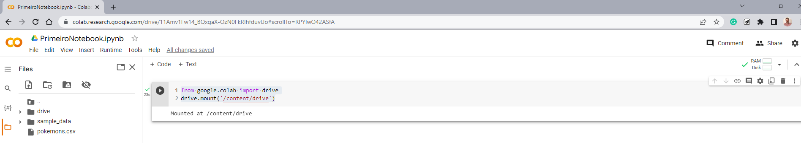
A próxima etapa é realizar a carga de um arquivo com nosso script, para que possamos realizar nossas análises.
Carregar um arquivo de dados no notebook
Para esse etapa, vamos utilizar a função nativa do Python para abrir arquivos open em conjunto com a biblioteca csv para carregar o conteúdo do nosso arquivo em um objeto que será posteriormente utilizado pela biblioteca de visualização. Você pode copiar e colar o código abaixo em seu próprio notebook e testar. Não esqueça que antes, você deve fazer o upload do arquivo pokemons.csv no sistema de arquivos local do notebook.
Para verificar se o conteúdo foi carregado na lista de pokemons, podemos executar o código abaixo:
for indice in range(0, 2): # executa um loop dos dois primeiros elementos do array
print(pokemons[indice]) # imprime o elemento{'Number': '1', 'Name': 'Bulbasaur', 'Type 1': 'Grass', 'Type 2': 'Poison', 'Abilities': "['Chlorophyll', 'Overgrow']", 'HP': '45', 'Att': '49', 'Def': '49', 'Spa': '65', 'Spd': '65', 'Spe': '45', 'BST': '318', 'Mean': '53.0', 'Standard Deviation': '8.640987597877146', 'Generation': '1.0', 'Experience type': 'Medium Slow', 'Experience to level 100': '1059860', 'Final Evolution': '0.0', 'Catch Rate': '45', 'Legendary': '0.0', 'Mega Evolution': '0.0', 'Alolan Form': '0.0', 'Galarian Form': '0.0', 'Against Normal': '1.0', 'Against Fire': '2.0', 'Against Water': '0.5', 'Against Electric': '0.5', 'Against Grass': '0.25', 'Against Ice': '2.0', 'Against Fighting': '0.5', 'Against Poison': '1.0', 'Against Ground': '1.0', 'Against Flying': '2.0', 'Against Psychic': '2.0', 'Against Bug': '1.0', 'Against Rock': '1.0', 'Against Ghost': '1.0', 'Against Dragon': '1.0', 'Against Dark': '1.0', 'Against Steel': '1.0', 'Against Fairy': '0.5', 'Height': '0.7', 'Weight': '6.9', 'BMI': '14.1'}
{'Number': '2', 'Name': 'Ivysaur', 'Type 1': 'Grass', 'Type 2': 'Poison', 'Abilities': "['Chlorophyll', 'Overgrow']", 'HP': '60', 'Att': '62', 'Def': '63', 'Spa': '80', 'Spd': '80', 'Spe': '60', 'BST': '405', 'Mean': '67.5', 'Standard Deviation': '8.902246907382429', 'Generation': '1.0', 'Experience type': 'Medium Slow', 'Experience to level 100': '1059860', 'Final Evolution': '0.0', 'Catch Rate': '45', 'Legendary': '0.0', 'Mega Evolution': '0.0', 'Alolan Form': '0.0', 'Galarian Form': '0.0', 'Against Normal': '1.0', 'Against Fire': '2.0', 'Against Water': '0.5', 'Against Electric': '0.5', 'Against Grass': '0.25', 'Against Ice': '2.0', 'Against Fighting': '0.5', 'Against Poison': '1.0', 'Against Ground': '1.0', 'Against Flying': '2.0', 'Against Psychic': '2.0', 'Against Bug': '1.0', 'Against Rock': '1.0', 'Against Ghost': '1.0', 'Against Dragon': '1.0', 'Against Dark': '1.0', 'Against Steel': '1.0', 'Against Fairy': '0.5', 'Height': '1.0', 'Weight': '13.0', 'BMI': '13.0'}Podemos ver no resultado da célula de código que aquele for imprimiu o conteúdo de duas linhas do arquivo de pokemons.
Transformando do formato Largo para o Longo
Certo, se você chegou até aqui, então: - Criamos um notebook - Demos um nome para ele - Fizemos o upload de um arquivo de dados para o session storage do notebook - Carregamos os dados em uma lista na memória do notebook.
O que vem a seguir? Vamos começar a utilizar estes dados.
Utilizando os dados na memória
Em um cenário real, um Cientista de Dados iniciaria agora a etapa de exploração dos dados. Essa etapa envolve trabalhar com a correlação entre as diversas variáveis contidas nos dados, totalizações de quantidade de registros por qualquer uma dessas variáveis, e, também plotando gráficos.
Vamos a um exemplo? Digamos que eu quero totalizar a quantidade pokemons de acordo com seu tipo. Essa totalização poderia ser utilizada para criar um gráfico de barras, mostrando a distribuição dos pokemons entre os tipos, mostrando qual tipo é mais frequente. É importante aqui ressaltar que temos no conjunto de dados duas colunas que especificam o tipo: Type 1 e Type 2.
O código para fazer isso está logo abaixo.
tipos_dict = {}
for item in pokemons:
if item['Type 1']:
tipos_dict[item['Type 1']] = tipos_dict.get(item['Type 1'], 0) + 1
if item['Type 2']:
tipos_dict[item['Type 2']] = tipos_dict.get(item['Type 2'], 0) + 1
tipos = []
for key, value in tipos_dict.items():
tipos.append({"Tipo": key, "Valor": value})
for item in tipos:
print(item){'Tipo': 'Grass', 'Valor': 119}
{'Tipo': 'Poison', 'Valor': 77}
{'Tipo': 'Fire', 'Valor': 81}
{'Tipo': 'Flying', 'Valor': 120}
{'Tipo': 'Dragon', 'Valor': 72}
{'Tipo': 'Water', 'Valor': 151}
{'Tipo': 'Bug', 'Valor': 90}
{'Tipo': 'Normal', 'Valor': 124}
{'Tipo': 'Dark', 'Valor': 72}
{'Tipo': 'Electric', 'Valor': 70}
{'Tipo': 'Psychic', 'Valor': 119}
{'Tipo': 'Ground', 'Valor': 80}
{'Tipo': 'Ice', 'Valor': 56}
{'Tipo': 'Steel', 'Valor': 71}
{'Tipo': 'Fairy', 'Valor': 63}
{'Tipo': 'Fighting', 'Valor': 73}
{'Tipo': 'Rock', 'Valor': 74}
{'Tipo': 'Ghost', 'Valor': 68}Esse código tem como objetivo contar a quantidade de ocorrências de cada tipo de Pokémon e imprimir os resultados. Ele faz isso utilizando um dicionário (tipos_dict) para armazenar a contagem de cada tipo e uma lista de dicionários (tipos) para armazenar os resultados finais.
A primeira parte do código cria um dicionário vazio chamado tipos_dict. Em seguida, itera sobre uma lista de dicionários chamada pokemons. Para cada dicionário na lista, verifica se o valor da chave ‘Type 1’ e ‘Type 2’ é diferente de None. Se pelo menos um desses valores existir, a chave correspondente no dicionário tipos_dict é incrementada em 1.
A segunda parte do código cria uma lista vazia chamada tipos e itera sobre os pares de chave-valor no dicionário tipos_dict. Para cada par de chave-valor, cria um novo dicionário com as chaves “Tipo” e “Valor”, e adiciona esse dicionário à lista tipos. A última parte é apenas para nosso benefício: ela imprime o conteúdo da lista tipos.
Voltando ao nosso cenário real, utilizaríamos a lista tipos para plotar um gráfico, por exemplo. Vamos tentar?
import matplotlib.pyplot as plt
# Cria o gráfico de barras
for item in tipos:
plt.bar(item['Tipo'], item['Valor'])
# Configura o título do gráfico e dos eixos
plt.title('Pokemons por Tipo')
plt.xlabel('Tipos')
plt.ylabel('Número de Pokemons')
# Exibe o gráfico na tela
plt.show()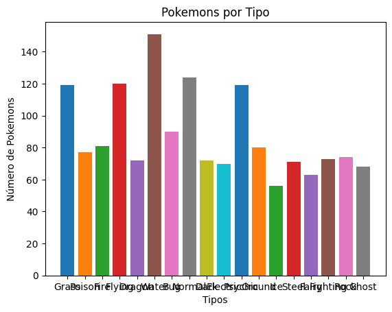
Olha só, conseguimos! Temos claramente um problema de formatação ocorrendo (o eixo do X está pequeno e a descrição dos tipos estão se sobrepondo), mas com alguns ajustes é um resultado correto. Mas ainda existem alguns problemas que precisam ser discutidos.
Transformando o formato dos dados
O nosso script, embora correto, sob o ponto de vista de Cientistas de Dados, deixa um pouco a desejar sob o ponto de vista da engenharia de software. Por exemplo, utilizamos muito mais memória que o necessário para realizar a totalização, porque tinhamos que analisar o registro completo que tem mais de 50 colunas, mesmo que precisassemos apenas de duas. Para obter os dados que funcionassem com a visualização, tivemos que fazer duas transformações. E ainda, na parte onde fazemos o plot do gráfico, tivemos que recorrer a um for loop para conseguir adicionar todas a barras no gráfico.
E esses problema ocorrem porque os dados acima estão no formato largo. Quando estamos iniciando, isso talvez não pareça um grande problema, mas conforme a complexidade das nossas análises aumenta, utilização de memória, redução da quantidade leitura/escrita e a otimização do código se tornarão mais e mais importantes.
Para resolver isso, podemos transformar os nossos dados para o formato longo. Vamos ver como podemos fazer isso no nosso código.
import csv
pokemons = {}
with open('pokemons.csv', 'r', encoding='utf-8') as arquivo:
dados = csv.DictReader(arquivo)
for pokemon in dados:
for key, value in pokemon.items():
pokemons.setdefault(key,[]).append(value)Este trecho de código em Python é bem parecido com o nosso código inicial, no sentido em que usamos as mesmas bibliotecas e executamos os mesmos primeiros passos. A diferença começa no primeiro for loop.
O for loop que segue itera sobre os dados do arquivo CSV, que são retornados como um dicionário. Para cada dicionário de dados, o código itera sobre as chaves do dicionário (que correspondem às colunas do arquivo CSV) e adiciona os valores correspondentes à lista correspondente no dicionário pokemons.
Por exemplo, se o arquivo CSV tiver uma coluna chamada “Nome” contendo os nomes dos Pokémons, o código adicionará cada nome encontrado à lista pokemons[“Name”]. Essa abordagem permite armazenar os dados dos Pokémons de forma organizada e fácil de manipular.
Ao final da execução desse trecho de código, o dicionário pokemons terá as informações lidas do arquivo CSV. Cada chave do dicionário corresponderá a uma coluna do arquivo CSV, e cada valor corresponderá à lista dos valores encontrados nessa coluna. Por exemplo, se o arquivo CSV tiver uma coluna chamada “Type 1”, a lista pokemons[“Type 1”] conterá os tipos encontrados nessa coluna.
Agora vamos ver como iremos contabilizar os tipos neste novo formato e plotar o gráfico.
total = { "Tipo": list(filter(None,pokemons["Type 1"])) + list(filter(None,pokemons["Type 2"]))}
import seaborn as sns
sns.countplot(x='Tipo', data=total)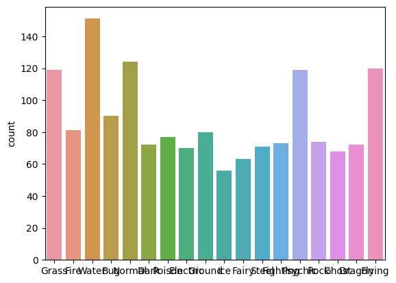
Ficou bem mais fácil fazer o plot deste gráfico, não? Temos basicamente o mesmo resultado com menos linhas. E se observarmos bem, no momento que fazemos o processo na primeira linha, acessamos apenas as colunas que estão envolvidas no cálculo.
Usando bibliotecas externas para facilitar o trabalho
Estamos chegando ao fim desta aula prática, e o aprendizado obtido acredito ter sido bem relevante. Já sabemos como disponibilizar um arquivo de dados para ser consumido pelo script em nosso notebook, aprendemos a formatar esse arquivo em memória para um processamento mais eficiente, e também mostramos rapidamente como utilizar o dado processado para plotar alguns gráficos.
Se vocês olharam com atenção ao código que escrevemos, verão que utilizamos muita vezes, no início de cada parte do script o comando import. Esse comando é utilizado para deixarmos explicito no script quais bibliotecas externas ao módulo básico da linguagem Python. O objetivo dessas bibliotecas é justamente nos ajudar com a simplificação do código.
Ao longo do restante das aulas, iremos utilizar várias bibliotecas como Pandas, Seaborn, MatplotLib e muitas outras. Ao final de cada aula, deixaremos alguns links que os ajudarão a começar a entender melhor cada uma dessas biblioteca.
E nesta aula, vamos deixar o link para a documentação do Python, a partir de onde poderemos nos informar sobre várias bibliotecas que usamos cotidianamente como csv, json, os, sys, logging, ....